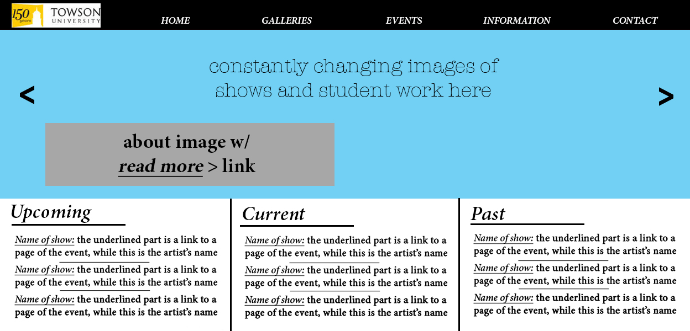

While questioning my interviewees (all of different backgrounds and interests), I came to the conclusion that none of them have ever used the Towson galleries website, even the people that were art majors. My general consensus as to why based off of the answers I was given was because it's marginally useless. It has hours, but most of the people that go to the galleries go in between classes, and it has relatively normal business hours. Some important things that must be included are the hours and the location and a short bio, all of which is already included. What needs to be improved is the description of the locations. What needs to be added is accountable contact information and more photos of the exhibits and student work, with interesting background info on the artists and exhibits. This would also help promote the artists and give them ways to share their work through social media. The website is also never talked about or promoted by teachers or Towson. If it is constantly updated and has relevant news, then it will be used and reach more people.
I loved the way that the page is mostly a slideshow of pictures to get the viewer interested, as well as the pictures of the location info.
This design is visually appealing, while also being easy to navigate.
Like the MoMA website, the main feature of the home page is pictures and information of upcoming exhibit.
Home Page
Information Page

Contact Page

Gallery Page
Artist/Exhibit Page
Events Calendar Page